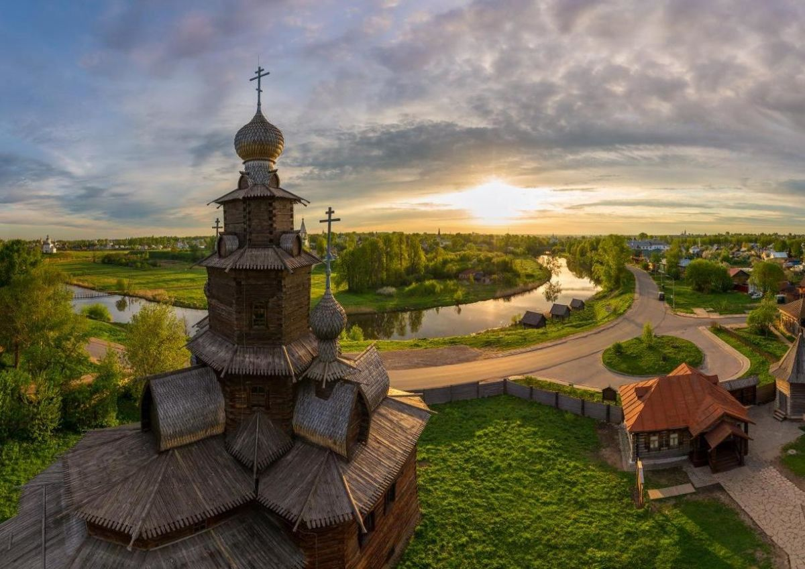
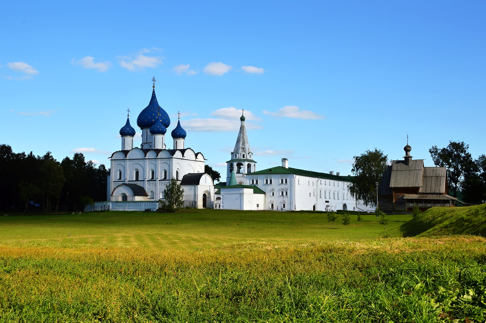
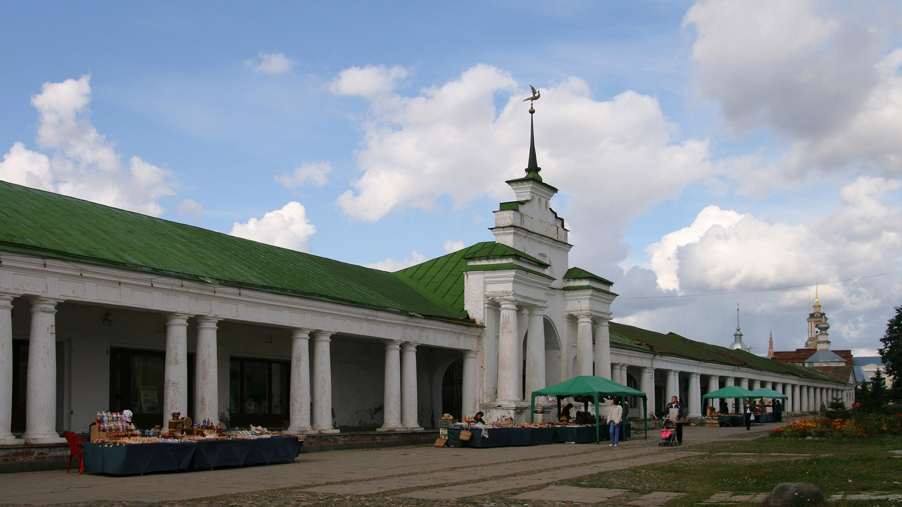
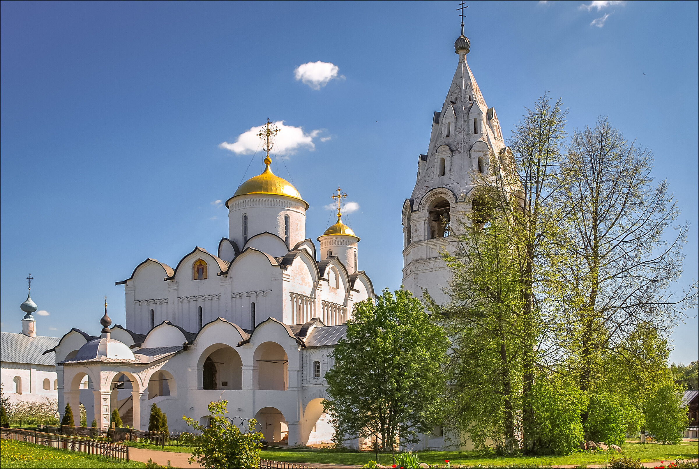
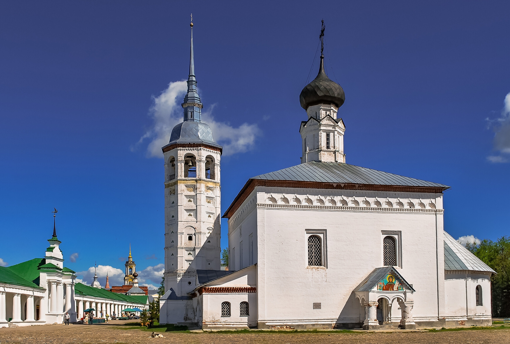

Суздаль
Суздаль – это город-музей. Такому количеству достопримечательностей, собранных в одном месте, может позавидовать, наверное, каждый город нашей необъятной Родины. Город просто дышит историей, пестрит памятниками архитектуры, искусства, он ослепляет куполами, поражает святостью и величием, он великолепен и заставляет задуматься как о вечном, так и о мирском. Здесь можно растеряться от количества интересных и необычных мест, хочется посетить их все, но увы не хватает на это времени. Именно из-за своих достопримечательностей город включён в список всемирного наследия Юнеско.

Кремль – это самая старая часть Суздаля. За время своего существования Кремль и его внутренние постройки несколько раз достраивались, восстанавливались и перестраивались. Это говорит о том, что четкого архитектурного стиля в постройках Кремля не наблюдается, его облик формировался на протяжении долгих столетий под влиянием каждого из владык Суздаля. Несмотря на разные драматичные события, главные сооружения хорошо сохранились. Сейчас Кремль является музеем с действующими постоянными выставками.

Торговые ряды иначе называют Гостиным двором. В его состав входили длинное прямоугольное здание и галерея. Здание было разделено на отдельные торговые лавки, (их было больше 100) которые сохранились не в полном размере. Лишь только северная часть Торговых рядов сумела выстоять в веках. Галерея состоит из классических колонн, она действительно украшает площадь, делает ее особенной. Здесь жители Суздаля гуляли вечерами, здесь они встречались с друзьями и обменивались городскими новостями.

Покровский монастырь и его стены, построенные в XIV веке, поражают воображение своим величием, торжественностью и светлостью. Даже воздух около монастыря кажется хрустальным, он пахнет святостью. В настоящее время монастырь действует, на его территории находятся Покровский собор, богадельня и различные хозяйственные постройки. Многие столетия обитель служила тюрьмой для женщин знатных фамилий, принудительно постригаемых в монахини. Сложная судьба Покровского монастыря неразрывно связана с русской историей и окружена легендами.

В самом центре города, возле торговых рядов в Суздале находится Воскресенская церковь. Белокаменные стены придают церкви величественность, нарядность и легкость, мелкие делали декора: угловые пилястры, небольшие окошки без наличников, карнизы с маленькими арочками – все это создает впечатление пышности. Крыша состоит из четырех скатов, она увенчана одним луковичным куполом. Эта церковь была очень давно основана, в летописи она упоминается уже в XVI веке.
